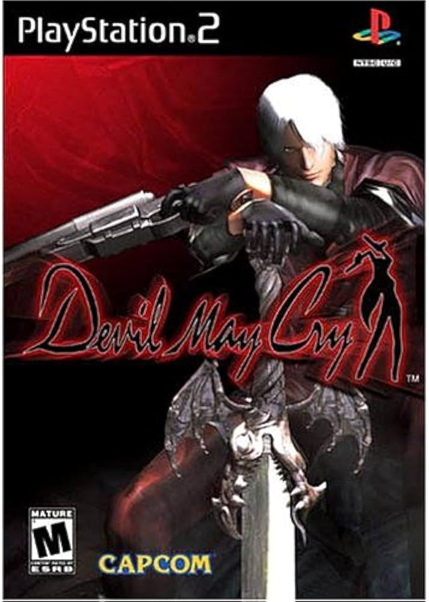

Sinopse
Devil May Cry é um jogo de ação-aventura e hack and slash desenvolvido pela Capcom, onde o jogador assume o controle de Dante, um caçador de demônios em busca de vingança contra os seres que destruíram sua família.
Com uma jogabilidade centrada em combate frenético e uma história cheia de mistérios, o título é conhecido por sua dificuldade, combos rápidos e movimentações acrobáticas, além de uma narrativa envolvente com elementos sobrenaturais e cenas cinematográficas impressionantes.
Características Principais
- Combate rápido e fluido com combos acrobáticos e uso de armas brancas e de fogo
- Personagens carismáticos, com destaque para o protagonista Dante
- Ambientes desafiadores e repletos de inimigos demoníacos
- Sistema de combo e pontuação baseado em desempenho
- Desafios e puzzles durante a progressão do jogo
- Trilha sonora marcante e atmosfera sombria e cinematográfica
Imagens Adicionais